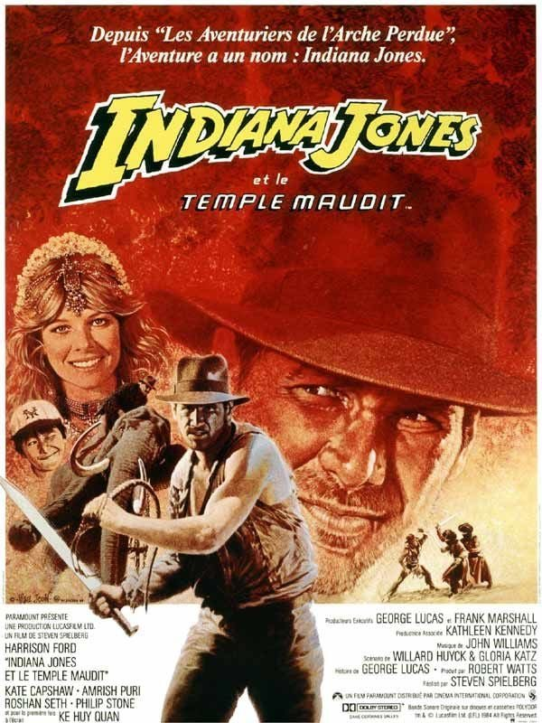
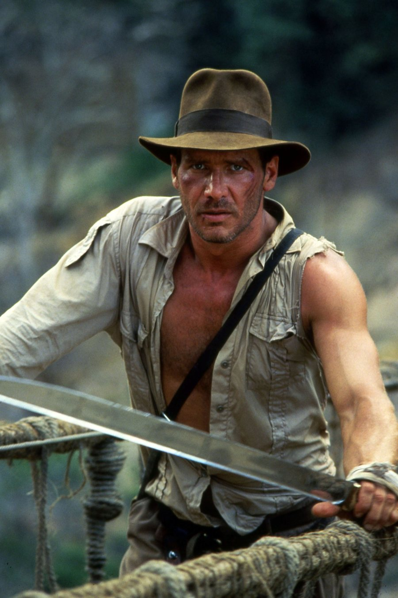

J'avais douze ans. Avec ma mère, nous avions loué la cassette à la bibliothèque du village. Quatre ans après ce réveillon où j'avais rencontré Indiana Jones, je le retrouvais dans une aventure plus sombre, plus folle et plus effrayante que tout ce que j'avais vu jusque-là.
Tout commençait dans un cabaret de Shanghai : une chanteuse en robe pailletée, un verre empoisonné, et un antidote qui roule entre les pieds des danseurs. Puis un village d'Inde, privé de ses enfants et de sa pierre sacrée. Un palais, et un banquet aux plats que je n'oserais toujours pas goûter.
Et puis il y a eu la cérémonie. Les chants, les flammes, et cette main qui s'enfonce dans la poitrine d'un homme pour en arracher le cœur. Il y a eu les enfants enchaînés au fond des mines. Indy, forcé de boire un breuvage infâme dans un crâne momifié, devenu une marionnette au service de la secte. Et Demi-Lune, son jeune compagnon, qui le ramène à la raison.
Puis la course en wagonnet, le pont suspendu au-dessus du vide, et les enfants qui rentrent enfin chez eux.
Il fallait rendre la cassette quelques jours plus tard. Mais à douze ans, Indiana Jones venait de graver en moi quelque chose d'inoubliable.
Ce soir, on descend dans le Temple maudit.

Indiana Jones et le Temple maudit — affiche française, 1984
Indiana Jones et le Temple maudit.
Réalisé par Steven Spielberg. Avec Harrison Ford, Kate Capshaw, Ke Huy Quan et Amrish Puri.
Produit par Lucasfilm pour Paramount, d'après une histoire de George Lucas, sur un scénario de Willard Huyck et Gloria Katz, le couple qui avait écrit American Graffiti. La musique est à nouveau signée John Williams. Le film sort aux États-Unis en mai 1984, trois ans après Les Aventuriers de l'arche perdue, et devient l'un des plus gros succès de l'année.
Il remporte l'Oscar des meilleurs effets visuels.
Le Temple maudit n'est pas vraiment une suite. L'histoire se déroule en 1935, un an avant celle des Aventuriers. Indiana Jones fuit Shanghai avec une chanteuse de cabaret, Willie Scott, et un jeune garçon débrouillard, Demi-Lune. Leur avion s'écrase dans les montagnes de l'Inde.
Ils trouvent refuge dans un village frappé par une malédiction : sa pierre sacrée a disparu, et ses enfants ont été enlevés. La piste mène au palais de Pankot, et à ce qui se cache sous ses fondations.
Plus sombre, plus violent, plus fou que le premier film, Le Temple maudit a divisé à sa sortie. Il est aussi le plus extrême des trois. Un train fantôme lancé à pleine vitesse, dont on ressort secoué.
Après le triomphe des Aventuriers de l'arche perdue, une suite est décidée très vite. Mais George Lucas ne veut pas refaire le même film. Pas de nazis cette fois, pas d'arche, pas de Marion. Il imagine une aventure qui se déroule avant le premier épisode, en Inde, autour d'une secte inspirée des Thugs, ces adorateurs de la déesse Kali qui ont réellement existé.
Le ton sera beaucoup plus sombre. Lucas comme Spielberg traversent alors une période personnelle difficile, et on dit souvent que cette noirceur se retrouve dans le film.
Le scénario est confié à Willard Huyck et Gloria Katz. Plusieurs idées viennent directement des premières versions des Aventuriers, abandonnées à l'époque : la course en wagonnet dans une mine, le pont suspendu, la fuite d'un avion en canot pneumatique.
Pour tourner en Inde, la production a besoin d'une autorisation officielle. Le gouvernement indien demande à lire le scénario, et refuse. L'équipe se replie au Sri Lanka, où le village et les décors naturels sont reconstitués, et où des ingénieurs construisent un vrai pont de corde au-dessus d'un ravin. Le cabaret de Shanghai et les décors du palais et du temple sont bâtis dans les studios d'Elstree, en Angleterre. Quelques plans sont tournés à Macao.
Le tournage n'épargne pas Harrison Ford. Il se blesse gravement au dos et doit repartir à Los Angeles pour être opéré. Pendant plusieurs semaines, Spielberg filme autour de son absence, avec la doublure Vic Armstrong dans certaines scènes. Ford revient pour terminer le film.
Pour le rôle de Willie Scott, Spielberg choisit Kate Capshaw. Ils se rencontrent sur le tournage, et elle deviendra sa femme quelques années plus tard. Demi-Lune est joué par Ke Huy Quan, douze ans, repéré lors d'un casting où il accompagnait son frère. Près de quarante ans plus tard, il remportera l'Oscar du meilleur second rôle.
Les effets spéciaux sont confiés à Industrial Light & Magic, la société de Lucas. La poursuite en wagonnet mélange décors réels, maquettes et figurines animées image par image. Pour la salle des insectes, l'équipe réunit des dizaines de milliers de bestioles.

Le pont suspendu au-dessus du ravin
Shanghai, 1935.
Dans un cabaret enfumé, le club Obi Wan, Indiana Jones négocie avec un chef mafieux. L'échange tourne mal : un verre empoisonné, un diamant qui glisse sur la piste de danse, un antidote perdu au milieu de la foule, et une fusillade générale. Indy s'échappe de justesse avec Willie Scott, la chanteuse vedette du club, et Demi-Lune, un gamin des rues qui lui sert de chauffeur et de garde du corps.
Ils embarquent dans un avion pour quitter la ville. Mais l'appareil appartient à leurs ennemis, et le voyage s'achève dans les montagnes de l'Inde, sans pilote et sans carburant.
Les trois rescapés arrivent dans un pauvre village. Ses habitants les accueillent comme des envoyés du ciel. Leur pierre sacrée a été volée, les cultures dépérissent, et tous les enfants ont disparu. Les villageois accusent le palais de Pankot, tout proche, d'où serait venue une ancienne puissance.
Indy accepte de s'y rendre. Pour la pierre, pour les enfants, et pour la fortune et la gloire.
Au palais, on les reçoit avec faste, au cours d'un banquet que personne n'oubliera. Le jeune maharadja est charmant, son Premier ministre courtois, et tout le monde affirme que les vieilles légendes sont mortes depuis longtemps.
Mais la nuit, le palais respire. Des passages secrets s'ouvrent dans les murs, et des chants montent des profondeurs.
Un aventurier, une chanteuse qui déteste l'aventure, un enfant qui n'a peur de rien, et sous leurs pieds, un temple que personne n'aurait dû découvrir.
Le Temple maudit est un film qui ne connaît pas le frein. Spielberg le voulait comme un grand huit, et c'est exactement ce qu'il est : une succession de montées vertigineuses et de chutes brutales, sans une seconde pour reprendre son souffle.
Tout commence par un numéro musical. Kate Capshaw chante « Anything Goes » de Cole Porter, en mandarin, entourée de danseuses en hommage aux grandes comédies musicales hollywoodiennes. Quelques minutes plus tard, le cabaret vole en éclats. Le film annonce la couleur : tout peut arriver, et tout arrivera.
Le cœur du film, c'est la descente aux enfers. Plus on s'enfonce sous le palais, plus le récit bascule vers l'horreur : un banquet grotesque, une salle grouillant d'insectes, une cérémonie à la lueur des flammes où un homme se fait arracher le cœur, des enfants réduits en esclavage au fond des mines. Pour un film d'aventure familial, c'est d'une noirceur inédite. Spielberg ose même retourner son héros : sous l'emprise de la secte, Indiana Jones devient un ennemi. Pendant quelques minutes, le spectateur perd son repère.
Car ce film raconte aussi une transformation. Au début, Indy court après la fortune et la gloire. À la fin, il se bat pour des enfants qui ne sont pas les siens. C'est le moment où l'aventurier mercenaire devient un héros.
Autour de lui, le trio fonctionne comme une petite famille de fortune. Willie Scott, la chanteuse qui hurle au moindre insecte, apporte la comédie, à la manière des héroïnes des années 30. Demi-Lune apporte le cœur. C'est lui qui sauve Indy quand plus personne ne le peut, et beaucoup d'enfants de l'époque se sont identifiés à ce gamin intrépide qui se battait aux côtés de son héros.
Face à eux, Mola Ram, joué par l'acteur indien Amrish Puri, est l'un des méchants les plus terrifiants de la saga : une voix grave, un regard fixe, une coiffe en crâne de taureau.
Et puis il y a le final, une démonstration de mise en scène : la course en wagonnet dans les galeries de la mine, filmée comme un manège lancé dans le noir, puis l'affrontement sur le pont suspendu au-dessus du ravin. Deux séquences parmi les plus spectaculaires du cinéma des années 80.
Le film a pourtant ses limites. Willie peut agacer, l'humour tranche parfois avec l'horreur, et le portrait de l'Inde, avec ses plats répugnants et sa secte sanguinaire, relève du fantasme colonial plus que de la réalité. Le film porte les clichés de son époque.
Mais il reste d'une audace folle : celui où Spielberg et Lucas sont allés le plus loin.

Demi-Lune, Willie et Indy face au temple
Parce qu'il a survécu à tout ce qu'on lui a reproché.
À sa sortie, le succès est massif : plus de trois cents millions de dollars de recettes dans le monde. Mais la critique est partagée, et une partie du public sort choquée. Le cœur arraché, les enfants enchaînés, les sacrifices humains : pour un film vendu comme une aventure familiale, c'est trop. Aux États-Unis, des parents protestent.
La polémique est telle qu'elle change les règles du cinéma américain. Le Temple maudit, avec Gremlins sorti la même année, pousse les studios à créer une nouvelle catégorie de classement, le PG-13 : un film déconseillé aux moins de treize ans, sans être interdit. Peu de films peuvent se vanter d'avoir modifié le système à eux seuls.
Spielberg lui-même prend ses distances. Il dira plus tard que c'est l'épisode qu'il aime le moins, trop sombre, trop violent. Lucas reconnaîtra aussi qu'ils étaient allés trop loin. Pour la suite, ils reviendront à un ton plus léger.
Et pourtant, le film ne s'est jamais effacé. Pour toute une génération, celle qui l'a découvert enfant sur une cassette ou à la télévision, Le Temple maudit est justement le plus marquant des trois, parce qu'il faisait peur. Le banquet, la cérémonie, la mine : ces images se sont gravées dans les mémoires bien plus profondément que celles des films plus sages.
Ses séquences sont devenues des références. La course en wagonnet a inspiré des attractions de parcs et des générations de jeux vidéo. Le film a d'ailleurs eu sa propre borne d'arcade dès 1985. Le pont suspendu reste l'une des scènes de cascade les plus imitées du cinéma d'aventure.
Puis le temps a fait son œuvre. Avec le recul, on a reconnu au film son énergie, sa générosité et son audace. En 2023, quand Ke Huy Quan, l'ancien Demi-Lune, remporte l'Oscar du meilleur second rôle, toute une génération se souvient du gamin qui sauvait Indiana Jones. Le film retrouve alors une nouvelle lumière.
Le Temple maudit n'est pas devenu un classique malgré sa noirceur. Il l'est devenu grâce à elle.
Parce que c'est l'aventure la plus intense de toute la saga, et qu'elle n'a rien perdu de sa force.
Revu aujourd'hui, Le Temple maudit frappe d'abord par son rythme. Pas de longue mise en place, pas de temps mort : le film s'ouvre sur une fusillade dans un cabaret et ne relâche presque jamais la pression. Chaque séquence en appelle une autre, jusqu'au pont suspendu.
Parce que sa noirceur, qui inquiétait tant en 1984, fait aujourd'hui sa singularité. Rares sont les films d'aventure qui osent emmener leur public aussi loin dans la peur. Celui-ci le fait sans s'excuser, et c'est ce qui le rend si mémorable.
Parce que ses morceaux de bravoure restent des leçons de cinéma. La course en wagonnet, tournée avec des maquettes, des figurines et beaucoup d'ingéniosité, garde une énergie que beaucoup de poursuites en images de synthèse n'ont jamais retrouvée. Le pont de corde, construit pour de vrai au-dessus d'un ravin, donne encore le vertige.
Parce que c'est l'épisode où Indiana Jones devient vraiment un héros. Celui qui part chercher la fortune et la gloire, et qui finit par ramener des enfants chez eux.
Parce que Demi-Lune mérite d'être revu. Courageux, drôle et attachant, il est l'âme du film. Le revoir après l'Oscar de Ke Huy Quan donne au personnage une émotion nouvelle.
Et parce qu'il faut le regarder avec les yeux de l'enfant qu'on était : celui qui avait peur, qui fermait les yeux pendant la cérémonie et qui hurlait de joie dans le wagonnet. Pour beaucoup d'entre nous, c'était une première fois. Celle où l'on découvrait qu'un film pouvait faire peur et émerveiller en même temps.
Certains films, on les regarde. D'autres, on les traverse.
Le Temple maudit, je l'ai traversé à douze ans, un soir, avec une cassette louée avec ma mère à la bibliothèque du village. Je ne savais pas qu'il avait choqué l'Amérique, qu'il avait changé les règles du classement des films, ni que Spielberg lui-même le jugeait trop sombre. Je savais seulement que je n'avais jamais rien vu de pareil.
Un cabaret qui explose, un village sans enfants, un banquet impossible, un cœur arraché dans la lueur des flammes. Un héros qui se perd, et un enfant qui le ramène. Puis la mine, le wagonnet lancé dans le noir, le pont qui se balance au-dessus du vide. Et à la fin, les enfants qui rentrent chez eux.
C'est peut-être pour ça que ce film reste à part. Il m'a fait peur, et il m'a émerveillé dans le même mouvement. Il m'a appris qu'un héros n'est pas celui qui trouve le trésor, mais celui qui ramène les autres à la maison.
Quatre ans après ce réveillon où j'avais croisé Indiana Jones pour la première fois, il venait de graver quelque chose d'inoubliable en moi.
Ce soir, la trilogie continue. Il reste une dernière croisade.
La cassette est dans le lecteur. On rembobine.
Titre original
Indiana Jones and the Temple of Doom
Pays
États-Unis
Genre
Aventure / Action
Durée
118 min
Producteur
Lucasfilm · Paramount Pictures
Avec aussi
Amrish Puri · Roshan Seth · Philip Stone
Musique
John Williams
Fil conducteur
Trilogie Indiana Jones — La descente aux enfers
SOMEDAY — TRILOGIE INDIANA JONES EP. 02